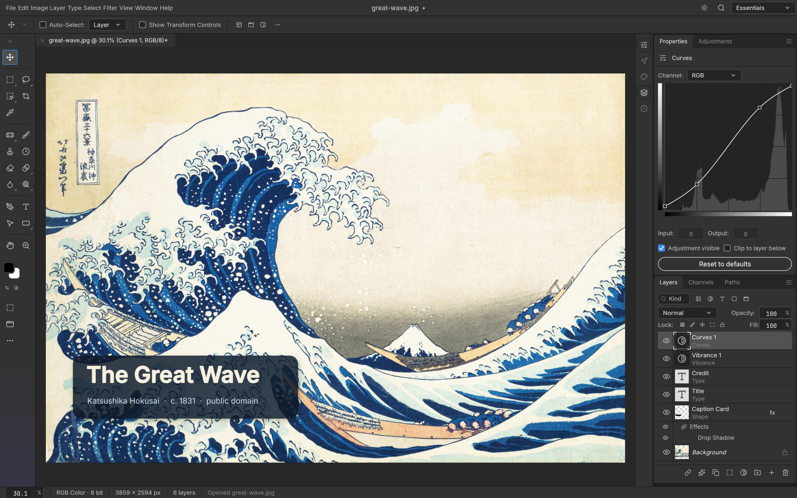
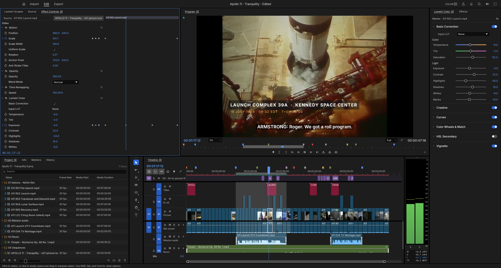

Edition 011 · Week of October 9, 2026
The tools worth your week
The week your creative suite went open-source. Four Rust-built replacements for Photoshop, Lightroom, Premiere and Acrobat landed in the same week - all free, all running on your own machine, no subscription. The rest arm your AI agent with reverse engineering, game modding, persistent memory and professional design taste.
storytold/photocraftPhotoCraft
A free, open-source photo editor that works like Photoshop - runs on your computer, no subscription, no account.


storytold/lightcraftLightCraft
A free photo library and RAW editor that works like Lightroom - organize, develop and export, all on your own machine.

storytold/filmcraftFilmCraft
A free, open-source video editor that works like Premiere Pro - timeline editing, color grading and export, on your own machine.
- #4PdfCraftstorytold/pdfcraftA free, open-source PDF reader and organizer that works like Acrobat - view, combine, split and secure PDFs on your own machine.Use it yourself9 days old · 5.4K stars
- #5Universal Modderrehan-remade/universal-modderA game-modding toolkit for AI agents - tell Claude Code what you want changed in a game, and it does the modding for you.Use it yourself9 days old · 5.8K stars
- #6REAmorluto/reaA reverse-engineering assistant that takes apart programs for you - binaries, apps, websites, firmware - and explains what it finds.For developersabout +34.9K stars this week
- #7claude-memthedotmack/claude-memPersistent memory for your AI agent - it remembers what you worked on, what you decided, and what you like, across sessions.Use it yourselfStill climbing · +5.2K stars this month
- #8ArtCraftstorytold/artcraftA creative studio that connects 62 AI models in one workspace - generate images, videos, 3D objects and music from a single app.Use it yourself+3.7K stars in a day
- #9Knowledge Work Pluginsanthropics/knowledge-work-pluginsAnthropic's official plugins for Claude Cowork - ready-made assistants for sales, support, legal, finance, marketing and more.Use it yourself+2K stars this week
- #10taste-skillLeonxlnx/taste-skillA design skill that gives your AI coding agent good taste - it stops building generic, boring-looking interfaces.Use it yourself+2.1K stars this week
How this week was picked: 255 candidates from 6 sources (GitHub Trending, Trendshift, skills.sh, findarepo, Hacker News, GitHub search). YouTube was not scanned (CAPTCHA in cloud). GitHub public pages returned challenge pages for candidate enrichment, but the security gate read them successfully for all checks. 14 cleared all floors. Picks: 6 by score, 3 new this week (under 45 days), 1 still climbing (over 90 days). 5 of the 10 picks are from the same maker (storytold/ArtCraft) - that concentration reflects a real moment (four Adobe replacements launched at once), not a gap in sourcing. Every repo passed our safety check on Oct 9. artcraft settled PASS by routine (activity flag: 12.4K stars on 21 commits - the repo is the brand hub, not the main codebase; no advisories, CVEs or security reports). Re-check: ai-memory now FAILs (3 new unpatched advisories found Oct 9, blocklisted). Tips: none this week (data/tips.md empty).
Leaders in every category
The top 3 in each lane, checked for safety on Oct 9. Design counts AI design skills, the tools people actually install: impeccable, taste-skill and ui-ux-pro-max. Ranked by measured growth, adoption and total stars.
Development & Coding Agentschecked Oct 9
AI Updateschecked Oct 9
Automation & Agent Orchestrationchecked Oct 9
Research & Knowledgechecked Oct 9
Web Scraping & Data Extraction2 of 3 cleared
- 1Scrapling83.6K starsAdaptive scraping framework - from a single request to a full-scale crawl.
- 2agent-browser43.2K starsBrowser automation CLI built for AI agents.
- 1 slot open: the old picks failed the safety check, and replacements are being checked.
Website Builders2 of 3 cleared
- 1grapesjs26.3K starsThe classic embeddable drag-and-drop web builder framework.
- 2webstudio9K starsOpen-source visual builder - the Webflow alternative.
- 1 slot open: the old picks failed the safety check, and replacements are being checked.
Design & Brandingchecked Oct 9
- 1impeccable71.6K stars · +332 a dayTeaches your AI coding tool real design sense, so what it builds doesn't look AI-made.
- 2taste-skill94K stars · +305 a dayGives your AI good taste: stops it from producing boring, generic designs.
- 3ui-ux-pro-max131K stars · +256 a dayA design playbook your AI follows to build professional screens for web and mobile.
Build & DevOps1 of 3 cleared
- 1dagger16.3K starsPortable, programmable CI/CD pipelines as code.
- 2 slots open: the old picks failed the safety check, and replacements are being checked.
Sales & CRM0 of 3 cleared
- 3 slots open: the old picks failed the safety check, and replacements are being checked.
Financechecked Oct 9
Security & Privacychecked Oct 9
- 1strix64.7K starsAI pentesting agent - finds, validates, and fixes vulnerabilities autonomously.
- 2shannon48.4K starsAI pentester for web applications - analyzes source, identifies vectors, executes real exploits.
- 3REA35K stars · +5K a dayAI reverse-engineering assistant - disassembles binaries, APKs, Electron apps and firmware, and explains what it finds.
The Claude Board
The most-installed Claude skills and plugins, counted on skills.sh (Oct 9), each checked for safety. Vendor-only packs (such as Microsoft's Azure skills) are left out, and a repo needs at least 1K GitHub stars so install counts can't be gamed.
- 1mattpocock/skills24.8M installs · 54 skillsMatt Pocock's everyday engineering skills for AI agents: planning, reviews, debugging and more.
- 2HyperFrames9.1M installs · 52 skillsYour AI writes a web page, and HyperFrames turns it into a video.
- 3taste-skill4.5M installs · 15 skillsGives your AI good taste: stops it from producing boring, generic designs.
- 4caveman3.7M installs · 23 skillsMakes your AI answer in short, blunt sentences to save money on tokens.
- 5skills (find-skills)3.6M installsThe npx skills tool: finds and installs skills for your AI agent.
- 6anthropics/skills3.3M installs · 21 skillsAnthropic's official skills for Claude: documents, slides, design and more.
- 7superpowers3.3M installs · 15 skillsTeaches coding agents to plan, test and debug like a careful senior engineer.
- 8wshobson/agents2.2M installs · 183 skillsA big marketplace of ready-made agents and skills for Claude Code and other tools.
- 9impeccable1.9M installs · 24 skillsTeaches your AI coding tool real design sense, so what it builds doesn't look AI-made.
- 10remotion skills1.5M installs · 15 skillsOfficial skills for making videos with code, using Remotion.